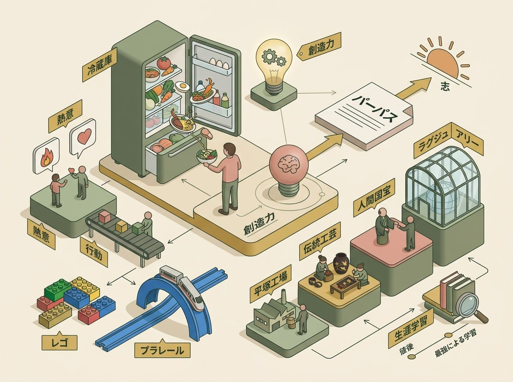
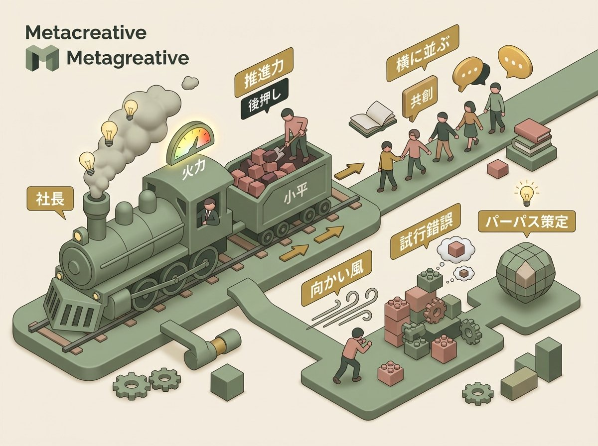
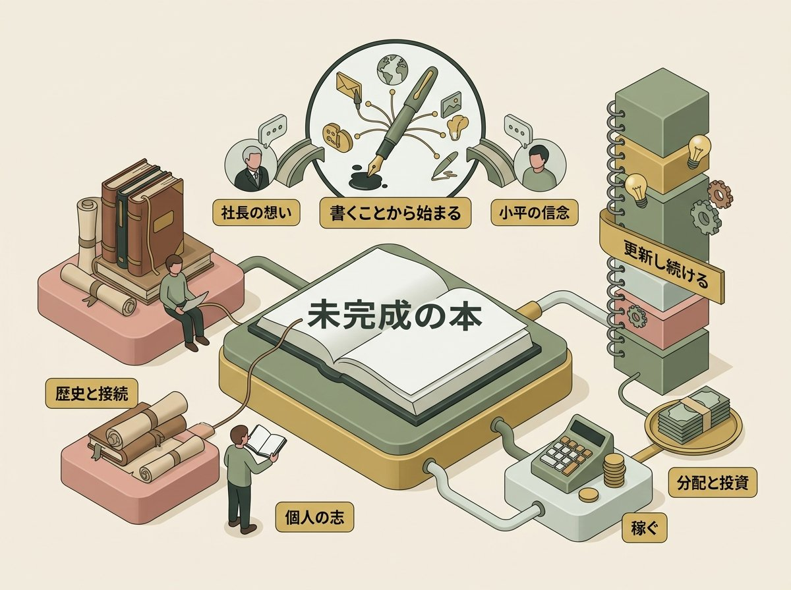

2026年4月3日、株式会社パイロットコーポレーション本社にて、取締役副社長・小平岳志氏へのインタビューが行われた。来月に控える部課長向けワークショップに先立ち、パーパス「人と創造力をつなぐ」を、経営の実務と個人の歩みの双方から語ってもらう——それが今回の趣旨である。
インタビューの冒頭、受付に飾られていたTIME VASE（パイロットの未来創造実験室「PILABOT」から生まれた、時間の経過とともに色が変わる器）のエピソードで場が和んだ後、事前に共有された富士通のパーパスカービングの資料を「もう全部見ました」と目を輝かせる小平。同席したPILOT社員たちの「小平さんでよかった」「向かい風を受けてらっしゃったんだ」「書いた方が楽しいよという言葉で夢が生まれた」という証言もまた、副社長の語りに奥行きと裏付けを与えた。
本稿は約60分のインタビューを収録したフル版メタクリドキュメントから、ショート動画で取り上げる6つのエピソードを中心に再編集したショートバージョンである。時系列ではなく、意味のまとまりに沿って3章に再構成した。

創造力の定義について問われた小平は、正直にこう答えた。
小平
「創造力って本当難しくて、未だにそういう意味だと答えがない。やっぱり最初に思ってたのは、創造っていうとやっぱりプロだとかハイレベルなアマチュアの人みたいなのを想像したんですけども、かたや今日冷蔵庫にあるもので、晩御飯何作ろうかなとか、おつまみ何作ろうかなって、それも創造力だなと思うし」
小平
「みんな日々創造しながら暮らしておきながら、創造力っていう単語になると、急にプロだとかそういったのを想像してしまう」
冷蔵庫にあるもので晩御飯を作る。これも創造力だ。藤崎社長が語った「左に置いてあったものを右に」と同じ方向性だが、小平の比喩はより生活に密着している。そしてこの比喩には、意外な裏話がある。
インタビュアー
「先ほど創造力の話の時、冷蔵庫での話が出てきたので、料理をされる方かと思ったら」
小平
「いや、全くしないです。そこはもうすべて妻におんぶに抱っこです」
料理をしない人が冷蔵庫の例を出した。それは自分の体験ではなく、妻の創造力に対するリスペクトだった——この告白は場の空気を和ませると同時に、小平が「創造力」をどう見ているかを鮮やかに示している。自分の中にではなく、他者の中にそれを見出す。妻の毎日の営みの中に、プロの芸術家と同じ質の創造性を認める。この眼差しは、「人と創造力をつなぐ」というパーパスの、最も日常的で最も温かい解釈と言えるだろう。
日常的創造性（little-c）
創造性研究者カウフマンとベゲットの4Cモデルでは、創造性をmini-c（個人的洞察）、little-c（日常的創造性）、Pro-C（専門家レベル）、Big-C（歴史的業績）に分類する。小平が語る「冷蔵庫にあるもので晩御飯」はlittle-cの典型例であり、他者の中に創造力を見出すこと自体が「人と創造力をつなぐ」の実践になっている。
パーパスの策定に携わった小平には、「パーパス」を自分の言葉に翻訳した経験がある。
小平
「私、岳志っていう名前で志が入ってるんですけれども、パーパスって作成に携わってる頃から志っていう言葉が一番しっくりくるなって個人的には思ってたんですね。志ってその人がこう思った進むべき道だとか、こういう方向に行きたいっていう、そういう強い思いみたいなのが宿って、それがこう熱意になって行動につながる」
志が宿り、熱意になり、行動につながる。この三段階の認識は、パーパスが単なる掲示物ではなく、個人の中で生きて動くプロセスであることを示している。パーパスという横文字を「志」と翻訳することで、それは組織の標語ではなく、個人の生き方の問題になる。
志——日本的パーパスの翻訳
「志」は日本思想において独自の位置を占める概念だ。陽明学では志を「心の指し示す方向」と捉え、吉田松陰は「志を立ててもって万事の源となす」と説いた。小平が「岳志っていう名前で志が入っている」と語る時、パーパスは身体的な実感を伴う言葉へと変換される。この翻訳作業自体が、パーパス浸透の一つの方法論として示唆的だ。
子供時代について問われた小平は、「勉強は嫌い、体を動かすことが好き」と迷いなく答え、最も面白かったものとしてレゴとプラレールを挙げた。「青い線路が自分の創造力につながっている」と語るその記憶は、単なるノスタルジーではなく、「組み合わせて新しいものを作る」という行為の原体験だ。
入社後のキャリアは「面積が広がる」という独自の比喩で語られた。平塚工場南地区の敷地の3分の1から始まり、蒔絵や沈金の作家との交流、人間国宝との協働、世界的なラグジュアリーブランドとの仕事へと広がっていった。社会人になってからの学びには凄まじい集中力を発揮し、小平はそれを「一生の勉強量はみんな変わらない。自分は後半型だった」と表現した。

パイロットにおける自分の役割を問われた小平は、鮮やかな比喩を使った。
小平
「社長が蒸気機関車として前に行くエンジンだとしたら、私はそこのところ、後ろからやっぱりその石炭を入れて、スピードが上がるように、みんなを引っ張れるように後押ししていくっていう」
蒸気機関車と石炭。この比喩は鮮やかだ。社長が機関車として前を走る。自分は後ろから石炭を入れて、火力を上げる。引っ張るのではなく、押し上げる。主役ではなく、主役を機能させるための存在。この役割認識は、単なる謙遜ではない。小平の中に深く根ざした志向性だ。
小平
「好きか嫌いみたいな話でいくと、ナンバー2は好きでしたね、昔から。ですから、生徒会長とかってなるよりも、その下にいる策士とか戦略家だとか、そういう方がポジション的には好きだったんで」
PILOT社員の証言が、この「横に並ぶ」リーダーシップの具体像を描き出す。
PILOT社員
「わからないことを部長が部員に聞くんですよ。で、部員が答えられない場合は、当然その部員の方が調べなきゃ。小平さんの人との接し方って上からじゃないんですよ」
PILOT社員
「近いところに行って一緒にあっち歩いてこうよっていう、そういう感じで一緒に動けるのは、羨ましいなってずっと思ってたもので」
「一緒にあっち歩いてこうよ」。この言葉が、小平のリーダーシップの本質を凝縮している。上から引っ張るのでも、後ろから押すのでもなく、横に並んで一緒に歩く。ナンバー2という自認と、この「横に並ぶ」姿勢は矛盾しない。石炭を入れる人は、機関車の真後ろにいるのだから。
ナンバー2論とサーバント・リーダーシップ
ロバート・ケリーのフォロワーシップ理論では、優れたフォロワーを批判的思考と積極的関与の両方を備えた「模範的フォロワー」として定義する。小平が三国志の諸葛亮孔明のようなNo.2に惹かれるのは、「二番手が楽」だからではない。トップを動かし、組織の方向性を実質的に形作る「見えない影響力」への関心だ。石炭を入れる人がいなければ機関車は動かない。その不可欠性を、小平は直感的に理解している。
だが、その石炭を入れる人もまた、向かい風の中にいた。パーパス策定のプロセスについて、小平は率直に語った。
小平
「作るの本当ですかっていうような思いですかね。……私の何百歩先を行っていて、私は翻訳されてからじゃないとそれには会えないですし、そうするとそういう単語がこう目にし始めた頃に、これやんないとダメなんだよねとかって言われても、いや、何のことですか、それは最初の頃は正直ありましたね」
「作るの本当ですか」「何のことですか」「半信半疑」。パーパスブックの生みの親が、その始まりにおいて感じていた戸惑いは、生々しい。2018年、前社長が原書で読む人で何百歩も先を歩いていた。自分は翻訳を待つしかない。そのギャップの中で、なお走り続けた。
小平
「積み重なってきて、ある日なんか見えるが少し組み合わさって見えたっていうようなところですかね」
見えていたものが少しずつ組み合わさって、ある日「見えた」。子供時代のレゴのブロックのように、一つずつ積み重なり、ある時に全体の形が見えてくる。
PILOT社員の証言が、その奮闘の裏側を照らし出す。
PILOT社員
「すごいガラッと変わった瞬間を一緒に立ち会えて、その先導をしてくださっていたので、その影にすごい努力されてたっていうのがちゃんと聞けたので、すごい良かったなって思います。なので、私たちも努力しないと、やっぱり会社を変えるなんてのはできないってことですね」
PILOT社員
「パーパス作るぞ、中計出すぞって言って、小平さんが先頭を走ってて、そんなに向かい風を受けてらっしゃったんだ」
小平
「向かい風だった」
この短いやり取りに、多くの言葉よりも深い重みがある。後ろからついていた人には感じられなかった風圧を、先頭を走っていた人はずっと受け続けていた。石炭を入れる人もまた、向かい風に立っていたのだ。
変革の初期抵抗——「半信半疑」の正直さ
リーダーシップ研究者ロナルド・ハイフェッツが「適応課題」と呼ぶもの——技術的な解決策では対処できず、当事者自身の価値観の転換を要する問題——に直面した時、推進者の迷いは弱さではなく、課題の困難さの反映だ。小平がこの迷いを正直に語ったこと自体が、部課長への暗黙のメッセージになっている。「自分もわからなかった。でもやった」と。

パーパスブックの設計思想を、小平はこう語った。
小平
「パーパス作った時にこのパーパスブック作ったんですよね。『人と創造力をつなぐ』ってやっぱりすごく抽象的だし、自分ごと化するのが難しいなと思ってて」
小平
「これ未だに私これ結構いいものできたなって実は思ってるんですが、最近ね、持ち歩いてる人はいないし、なんかこれ書いてる人も見かけなくて寂しいんだけれども」
「結構いいものできたな」という自負と、「持ち歩いてる人はいない」という現実認識の落差が、パーパス浸透の難しさをリアルに物語っている。
パーパスブックに書き込む際、小平は百年史や過去の資料を参照していた。個人の志を書く行為が、会社の100年の歩みと接続していた。
小平
「私の企て、これが志だと思うんですけれども、それってやっぱり変わっていくものでもあると思ってて、作った当時、2022年の当時に書いたのと、今とやっぱり思いが変わってきてるんですよね」
2022年に書いたものと、今の思いは違う。だからこそ定期的に見直す意味がある。パーパスブックは完成品ではなく、常に更新され続ける「生きた文書」なのだ。
「稼ぐ」ということへの思いもまた、パーパスブックと地続きに語られた。「パーパスの下三行を具体化して形あるものにしたい。そして、その形あるものでやっぱり稼ぎたい」——社員とその家族への分配、投資家への分配。美しい理念だけでは人は食べていけないという当たり前の認識が、小平のリアリズムにはある。
そして「書く」という行為への信念が、パーパスブックの設計思想を根底から支えている。
小平
「うちの会社がですね、やっぱり書くっていうことを創業にして、主力の事業としてやってることがありますから。やっぱり書かないと始まらないのかなっていうのは感じてますね。ですからここも穴あきとかになってて、埋められるように、あえて書く未完成の本ですっていうのを最初に書いてあるんですけれども、完成させるのは一人一人っていう」
パイロットの創業の原点が「書く」であるならば、パーパスブックに書き込む行為は単なるワークショップの課題ではない。会社のDNAそのものに参加する行為だ。藤崎社長が「書くことは太古から続く営み」と語り、小平が「書かないと始まらない」と信じる——この二人の認識の重なりが、パーパスブックという企画の土台にある。
「穴あきの未完成の本」という設計思想
教育工学における「スキャフォールディング（足場かけ）」の発想に近い。学習者が自力で到達できるよう適度な支援構造を提供しつつ、答えそのものは学習者自身に委ねる。「完成させるのは一人一人」という言葉には、パーパスの浸透は上から注入するものではなく、各自が書き込むことで初めて実現するという設計思想が表れている。
PILOT社員の証言が、パーパスブックと個人の志を繋ぐエピソードを加えた。
PILOT社員
「小平さんが部長でいらっしゃる時に書いた方が楽しいよっていうような話で、書いたらやっぱり楽しくなりましたね、夢が生まれましたね。仕事の中で」
「書いた方が楽しいよ」——小平のこの素朴な一言が、部下に書くことを促し、書いたことで夢が生まれた。パーパスブックが「未完成の本」として設計された意味が、ここに凝縮されている。完成品を押しつけるのではなく、「書いたら楽しい」という勧めが、人の中に志を生む。
小平
「しかも正解がわからないし、正解がないので、その中でやっぱり考えるっていうのは、ずっとエンドレスなのかなっていうふうにもかたや思いますよね。だから答えを見つける旅をしてるところはあるかもしれないですね」
パーパス浸透のパラドックス——「正解がない」ことの意味
組織心理学者カール・ワイクは「センスメイキング（意味形成）」という概念で、人は行動した後にその意味を事後的に構成すると論じた。パーパスブックに書き込む行為は、正解を記録するのではなく、書くことによって意味を生成する行為なのだ。「未完成の本」という設計は、このパラドックスを意図的に利用している。完成していないからこそ、各自が意味を作り出す余地がある。穴があるからこそ、そこに自分の志が入る。
インタビューの終盤、小平は部課長層へのメッセージを求められた。
小平
「もう1回パーパスブックみんな開いて向き合ってみてほしいなっていうのは思いますね。志をやっぱり考える。それを、常日頃そこのことを思って考えることが、自分の進むべき道とか判断の礎みたいなのを作ることになると思うので」
小平
「私の企てを考えると、次にアクションって書いてあるんですけども、そのアクションはまさに挑戦。どういうパートナーとそれをやるかっていう話も、実はここにはあるんですけれども、それが協働になる。ですので、今、社長がよく言っている自律・挑戦・協働、このパーパスブックで自分の志を具現化することで、それはできるだろうなと思うし、その志を強く考えることによって情熱が生まれて、推進力にもなるだろうなって」
パーパスブックを開き、自分の志と向き合う。志を考えることが自律になる。次のアクションが挑戦になる。パートナーとやることが協働になる。藤崎社長の「自律・挑戦・協働」を、パーパスブックという具体的な道具を介して、一人一人の行動に落とし込む。この翻訳作業こそ、石炭を入れる人の仕事だ。
このインタビューを通じて浮かび上がったのは、「後押し」という姿勢を一貫して貫いてきた一人の人間の肖像だった。ナンバー2が好き。孔明に憧れる。蒸気機関車の後ろから石炭を入れる。上からではなく横に並んで「一緒にあっち歩いてこうよ」と言う。冷蔵庫の創造力の例は、自分ではなく妻へのリスペクトだった。
この人の中には、矛盾ではなく、一貫性がある。引くことで押す。任せることで育てる。書かないと始まらないと信じて、未完成の本を作る。100年の襷を、より良いもので次に渡したいと願いながら。
向かい風の中で石炭を入れ続けたこの人の言葉を、最後にもう一度記しておく。パーパスブックを開く。自分の志を書く。その礎を作る旅に、正解はない。だからこそ、書く。考える。学ぶ。そしてまた書く。